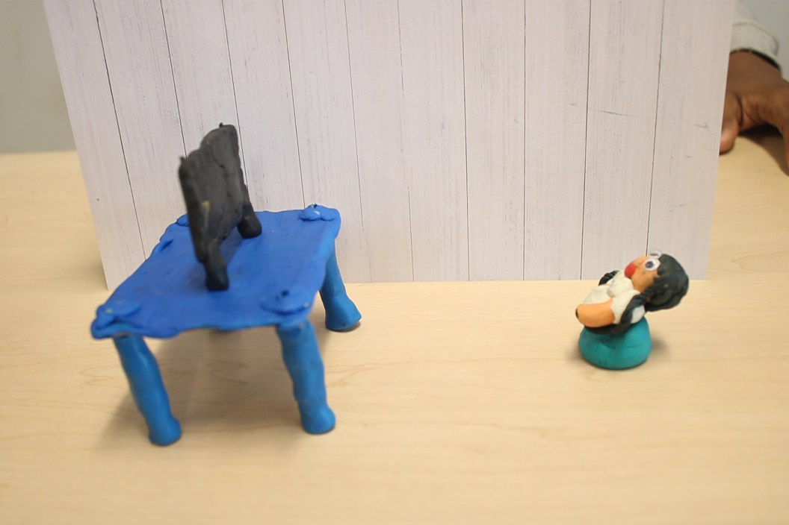
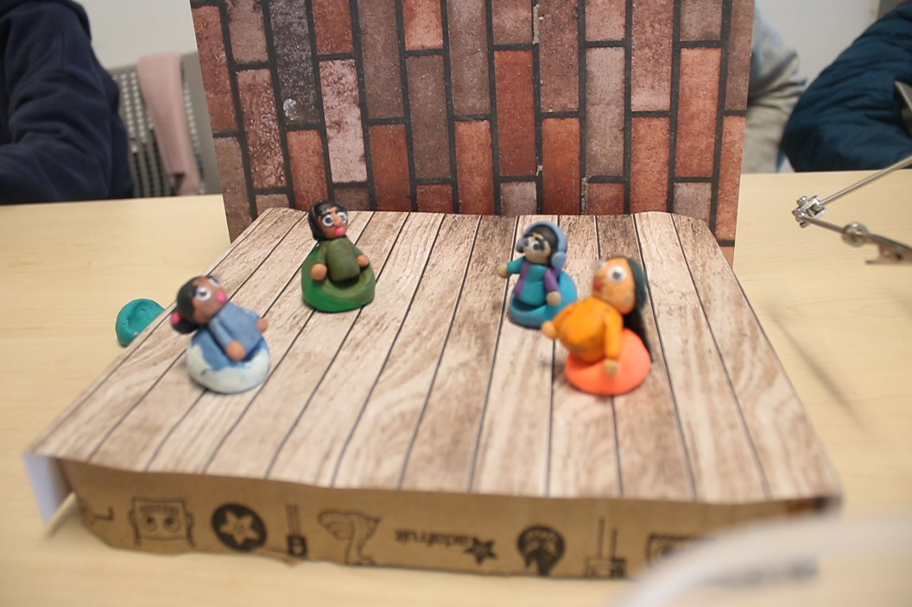
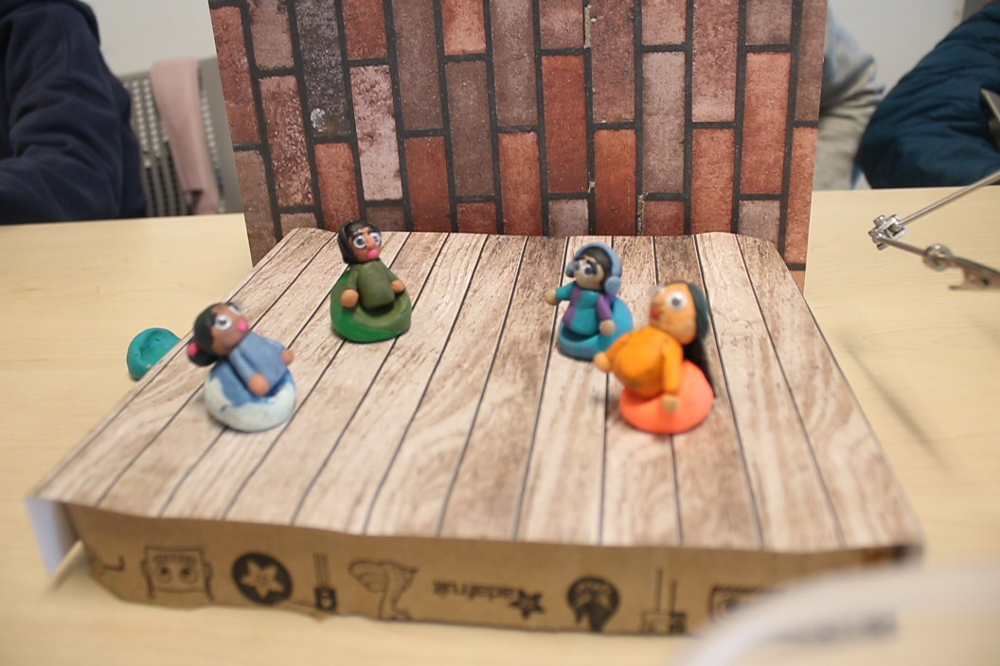

Our animation is about the dangers of spreading misinformation. What happens is our main character watches a show in which bad representation of people with Dissociative identity disorder (DID) is shown. She then goes to tell her friend about this adding her own interpretation of it which results in more misinformation being spread. That friend is coincidentally part of a big podcast which millions of people listen to. While talking about it, they add their own assumptions that are also wrong about the community. These millions of people know wrong information about a situation. Now let's say just one of those people goes and tells this to all of their friends? This is how a very hurtful cycle is born.
 
